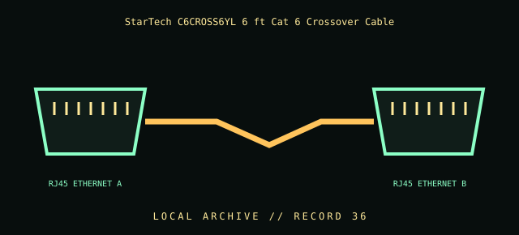

[ INDIVIDUAL COMPONENT // CABLES & ADAPTERS ]
StarTech C6CROSS6YL 6 ft Cat 6 Crossover Cable
StarTech.com C6CROSS6YL 6 ft Cat 6 UTP RJ45 crossover cable. This entry identifies the documented model and does not claim that visually similar products share its pinout, protocol, capability, or host compatibility.

COMPATIBILITY WARNING: Verify the exact product model, host/device role, signal protocol, electrical requirements, and manual before connection. Connector fit alone does not prove compatibility.
Specifications
| Catalog subcategory | Network and fiber cables |
|---|---|
| Catalog identity | StarTech.com C6CROSS6YL 6 ft Cat 6 UTP RJ45 crossover cable |
| Verified protocol / model information | Manufacturer product is a 6 ft Cat 6 Gigabit crossover cable with RJ45 connectors. Crossover wiring swaps transmit/receive pair assignments; modern ports with auto-MDI/MDIX may adapt automatically. |
| Connector ends | RJ45 ETHERNET A → RJ45 ETHERNET B; diagram is schematic, not a pinout map. |
Physical & electrical compatibility
Use for Ethernet equipment that requires crossover wiring or to document a legacy direct link. A crossover does not increase speed or convert Ethernet to another protocol. Check pin wiring/category markings; modern auto-MDI/MDIX may make a straight-through patch cable equivalent in practice.
Archival & handling notes
Preserve the yellow jacket/model marking; label as crossover so it is not mistaken for a straight-through patch lead. Inspect latch and jacket and avoid bends below manufacturer radius.
Record provenance, condition, label photographs, exact full part number/revision, host system, and any test method/result. Preserve packaging and source documents with the cable when available.
Manufacturer & standards references
- StarTech — C6CROSS6YL Cat 6 crossover cableManufacturer model, category, length, and crossover use.
- TIA — TIA-568 cabling standardsStandards organization reference for structured cabling and pair assignments.
Manufacturer documentation applies to the cited model; standards references describe the protocol family. Where product revisions or device support vary, the exact manufacturer manual and host documentation take precedence.